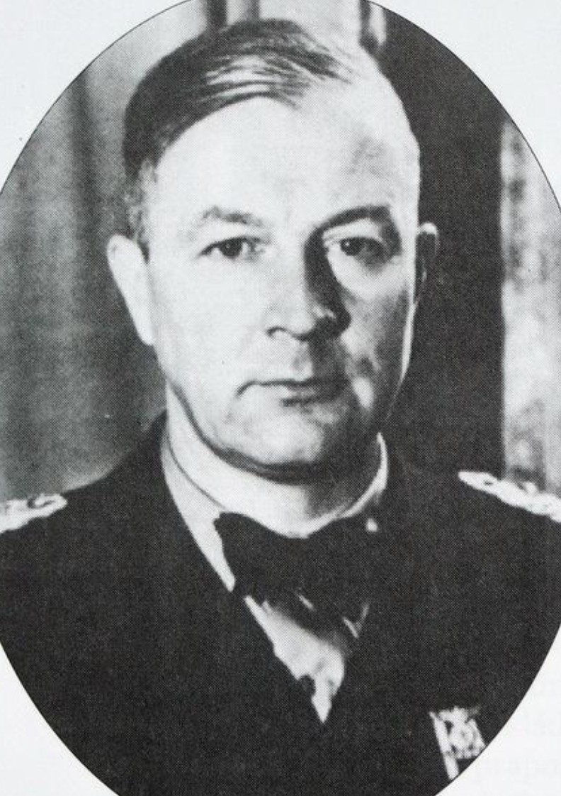
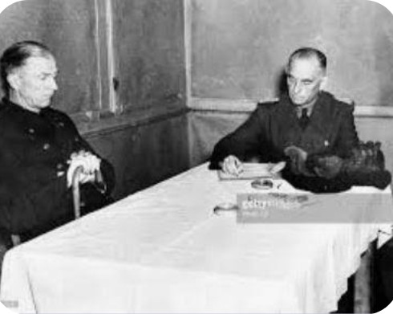
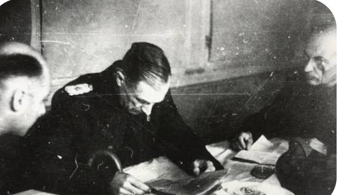

Nom : Friedrich Frisius
Dates : 17 janvier 1895 – 30 août 1970
Nationalité : Allemand
Grade : Generalmajor (Général de brigade)
Armée : Wehrmacht – Heer
Officier de carrière, Frisius sert dans la Reichswehr avant d’intégrer la Wehrmacht. Spécialiste des fortifications côtières, il est affecté à plusieurs postes de défense stratégique avant d’être nommé commandant de la Festung Dunkerque en 1944.
Son expérience dans les positions retranchées et son respect strict des ordres en font un officier apprécié de sa hiérarchie, mais aussi un adversaire déterminé pour les forces alliées.
En septembre 1944, les forces alliées encerclent Dunkerque, isolant totalement la garnison. Frisius reçoit l’ordre de tenir la ville « jusqu’au dernier homme ». Il organise alors une défense méthodique : bunkers, batteries côtières, contre‑attaques locales, harcèlement des lignes alliées.
Malgré la famine, les bombardements et l’absence totale de ravitaillement, la Festung Dunkerque résiste pendant huit mois, devenant l’une des dernières poches allemandes actives en France.

Frisius rédige un document militaire – Dunkerque, 1945.
Le 8 mai 1945, l’Allemagne capitule. Mais Dunkerque, toujours encerclée, n’a pas encore officiellement déposé les armes. Le lendemain, le 9 mai, Frisius se rend à Téteghem pour signer la reddition de la garnison.
Cette scène, immortalisée par plusieurs photographies, marque l’une des dernières redditions militaires de la Seconde Guerre mondiale en Europe.

Signature de la reddition de Dunkerque – 9 mai 1945.
Frisius reste une figure majeure de l’histoire de Dunkerque. Son entêtement à défendre la ville jusqu’au bout en fait un symbole de la résistance allemande tardive.
Sa reddition marque la fermeture définitive de la poche de Dunkerque, l’un des derniers bastions allemands en France. Aujourd’hui, son rôle est étudié pour comprendre les stratégies de défense côtière et les derniers jours du conflit en Europe.